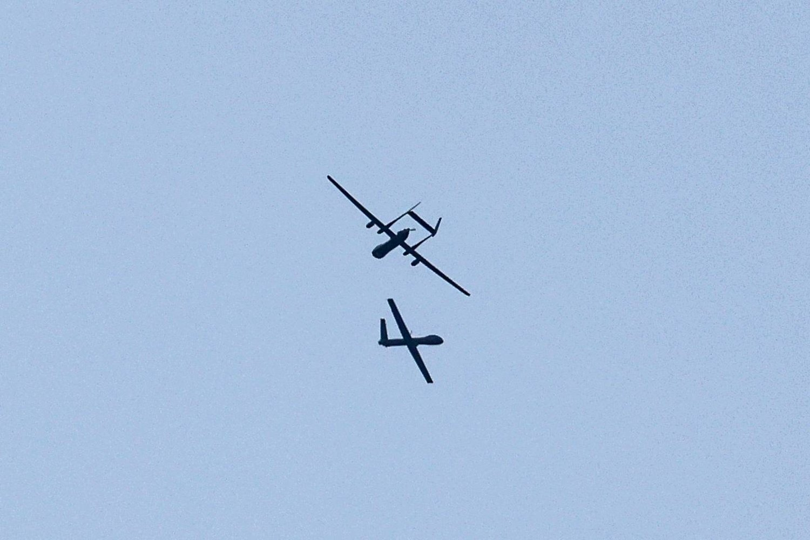

مسيّرات «حماس» رخيصة الثمن... ثغرة كبيرة في دفاعات إسرائيل

في يوم 7 أكتوبر (تشرين الأول) الماضي، فوجئ الجنود على الحدود
الجنوبية لإسرائيل بأسطول من المسيّرات المتاحة للبيع عبر الإنترنت
مقابل مبلغ زهيد، لا يتعدى 6500 دولار، يملأ السماء فوق السياج
الحدودي الإسرائيلي. لقد تم تجهيز هذه المسيّرات لحمل المتفجرات
وتدمير الكاميرات وأنظمة الاتصالات والأسلحة التي يتم التحكم فيها عن
بعد، مما مهد الطريق لهجوم غير مسبوق.
وتستخدم الجيوش المسيّرات في الصراعات منذ أكثر من عقدين. وتفتخر
إسرائيل نفسها بامتلاكها أحد أكبر «جيوش الطائرات المسيرة» في الشرق
الأوسط.
واليوم، بدأ يظهر جيل جديد من هذه الطائرات الرخيصة والمتاحة
تجارياً، مثل تلك التي استخدمتها «حماس» في هجوم 7 أكتوبر، مما يشكل
تحدياً لبعض القوى الأكثر تقدماً من الناحية التكنولوجية في العالم،
وفقاً لوكالة «بلومبرغ» للأنباء.
وكشف استخدام «حماس» لهذه المسيّرات التجارية لشن هجومها عن ثغرة
كبيرة في الدفاعات الجوية والبرية التي تفتخر بها إسرائيل باستمرار.
ومع تعرض أنظمة المراقبة الإسرائيلية ذات التقنية العالية للخطر بعد
استخدام هذه الطائرات ضدها، اجتاح الآلاف من مقاتلي «حماس» الحدود في
شاحنات ومظلات.
وتظهر مقاطع الفيديو التي نشرها الجناح العسكري لحركة «حماس» منذ
بداية الحرب مسيّرات تسقط قنابل يدوية على القوات الإسرائيلية وتلحق
أضراراً بالمركبات المدرعة.
ويرى بنتسيون ليفينسون، الرئيس التنفيذي لشركة «هيفين درونز»، التي
تزود الجيش الإسرائيلي بمسيّرات تعمل بالهيدروجين، أن ما حدث خلال
هجوم «حماس» غير المسبوق في 7 أكتوبر هو بمثابة «دعوة للاستيقاظ
لجيوش الدرجة الأولى بشأن قدراتها التي لطالما اعتقدت أنها فتاكة».
وأضاف: «لدينا طائرات مسيّرة ضخمة، وتقنيتنا أكثر تقدماً بكثير من
تلك الخاصة بالمسيّرات التي تستخدمها (حماس). لكن هذه الحرب جعلتنا
ندرك أن الطائرات الرخيصة يمكن أن تتفوق على الطائرات المتطورة عالية
التقنية، سواء في الجانب الدفاعي أو الهجومي».
ومن جهته، قال أفيف شابيرا، الرئيس التنفيذي لشركة «إكس تريند»، التي
توفر أنظمة تشغيل الطائرات المسيرة للجيشين الأميركي والإسرائيلي:
«يستخدم الجيش الإسرائيلي أسطوله من الطائرات المسيرة للمراقبة وقصف
الأهداف، كما أنه يستخدمها بشكل مزداد في حرب المدن بغزة لاستكشاف
المباني وتعطيل المتفجرات قبل إرسال القوات».
وقامت إسرائيل بالفعل بتحديث نظام القبة الحديدية الخاص بها - الذي
يستخدم أجهزة اعتراضية للحماية من الصواريخ قصيرة المدى المقبلة -
لاكتشاف المسيّرات الكبيرة، لكن كثيراً من طائرات «حماس» المسيّرة لا
تزال قادرة على الإفلات من هذا النظام. ويختبر الجيش الإسرائيلي
نظاماً يعتمد على الليزر مصمماً لاعتراض الصواريخ الأصغر حجماً
والصواريخ قصيرة المدى، على الرغم من أنه لن يكون جاهزاً قبل عام آخر
على الأقل.
وقام العشرات من الإسرائيليين العاملين في مجال التكنولوجيا بتطوير
تطبيق، يخضع الآن للاختبار الميداني في قواعد الجيش، يربط بين
كاميرتي هاتف جوال وأنظمة صوتية متطورة لمسح السماء بدقة بحثاً عن أي
طائرات من دون طيار.
ولا تزال هجمات «حماس» التي تقوم بها باستخدام الطائرات المسيرة تشكل
تهديداً قوياً، وفقاً ليران عنتيبي، الباحث في معهد دراسات الأمن
القومي في إسرائيل.
وقال عنتيبي: «هذه الطائرات التجارية رخيصة الثمن تمنحك القدرة على
استخدام ذخيرة دقيقة أو موجهة، وهو أمر لم تكن تستطيع فعله إلا الدول
المتقدمة جداً حتى سنوات عديدة مضت».
وأشار تقرير «بلومبرغ» إلى أن «حماس» طورت هذه التكتيكات مع حليفتها
إيران ومحمد الزواري، وهو مهندس تونسي قاد جهود الحركة لتطوير
الطائرات من دون طيار. واغتيل عام 2016 في عملية قتل تلقي «حماس»
باللوم فيها على المخابرات الإسرائيلية. وتمت تسمية نموذج من
الطائرات المسيرة الهجومية باسمه، وتم استخدام 35 منها في إطلاق
الصواريخ على إسرائيل مؤخراً.
ولفت التقرير أيضاً إلى أن فاعلية الطائرات المسيّرة التي تستخدمها
«حماس» في الحرب فاقمت المخاوف المزدادة من أن الجهات الفاعلة غير
الحكومية قد تطور أسلحة فتاكة باستخدام تكنولوجيا رخيصة لا يمكن تتبع
مبيعاتها، فحتى عندما تنفق الجيوش مبالغ قياسية على التكنولوجيا
المتطورة، فإن المعدات البسيطة يمكن أن تسمح للجماعات والحركات
المختلفة بالتخطيط للهجمات المدمرة.